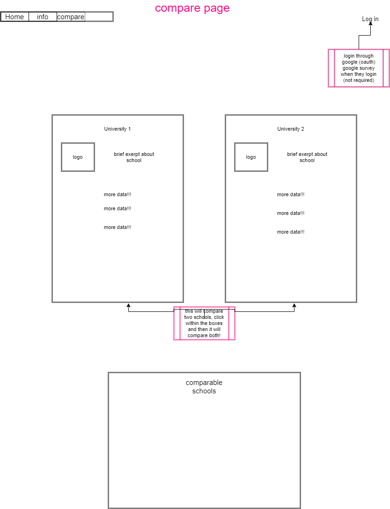
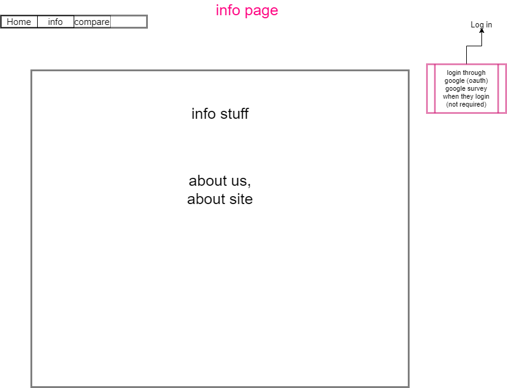
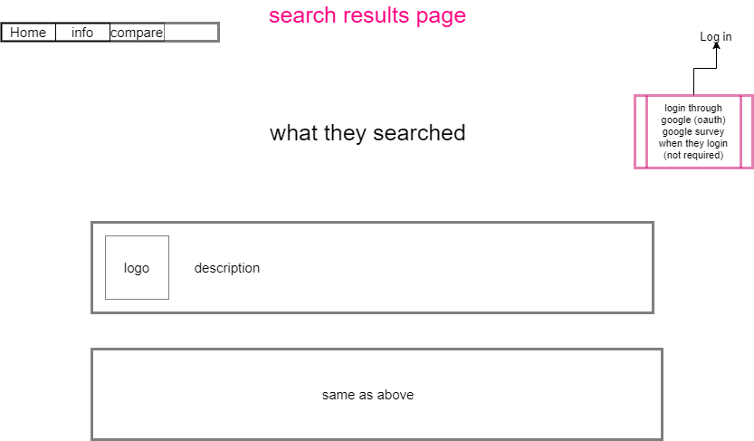

1 / 4

Home Page
2 / 4

Compare Page
3 / 4

Info Page
4 / 4

Search Page
In many cases an individual who is transferring from one college to another will face the challenge of finding a university to fit their desired needs. Uni-search is an app for transfer students that have college credit or have earned an AA degree. This app will give the resources to find the best educational opportunities best suited to students' individual needs. When searching for a university, students will consider the academic rigor, social atmosphere, extracurricular options, and ability to pay. This will be done through a survey, that will then direct students to the top school that fit their criteria. Users will then be able to click on a university to learn more about it. Students can also connect with admission officers and student ambassadors in order to learn more about a certain university. This app in particular will only include Washington State universities and colleges.
This app is also an effort to level the playing field so that every student has equal opportunity to explore and evaluate prospective colleges. Traditionally, students were expected to travel to many different schools, take tours, attend information sessions, and explore the surrounding area. In the past, this method of exploring college was often closed off to minority groups and first-generation college students, forcing them to make decisions based on limited information. With the development of this app, we will be able to offer clear, detailed, comparisons between colleges from the comfort of your phone. Additionally, with uncertainty from the COVID-19 pandemic, this also offers a safe alternative for students to explore their transfer options.
It will help with accreditation for community college, more students that transfer. Help with exposure for universities.
Solve: Assist students in exploring the best educational opportunities offered throughout different universities in Washington state to fit their individual needs. Students can filter through prospective universities based on location, size, and estimated cost to attend.
Transfer students, students with college credit, or individuals with AA